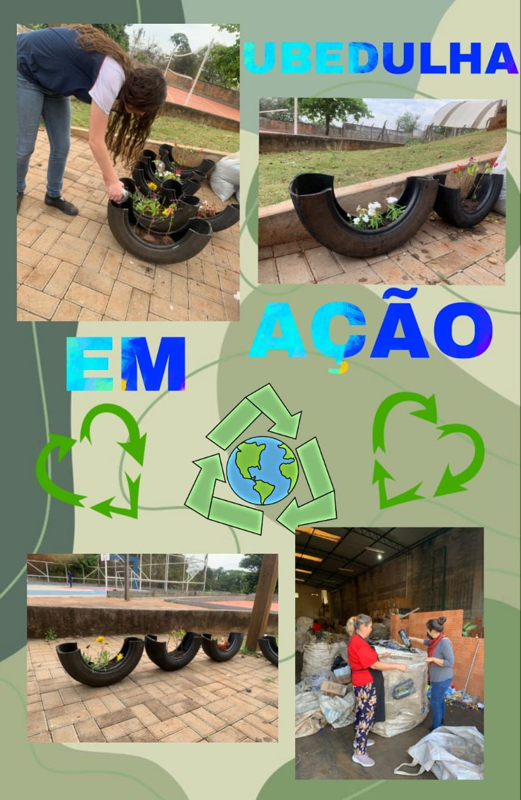
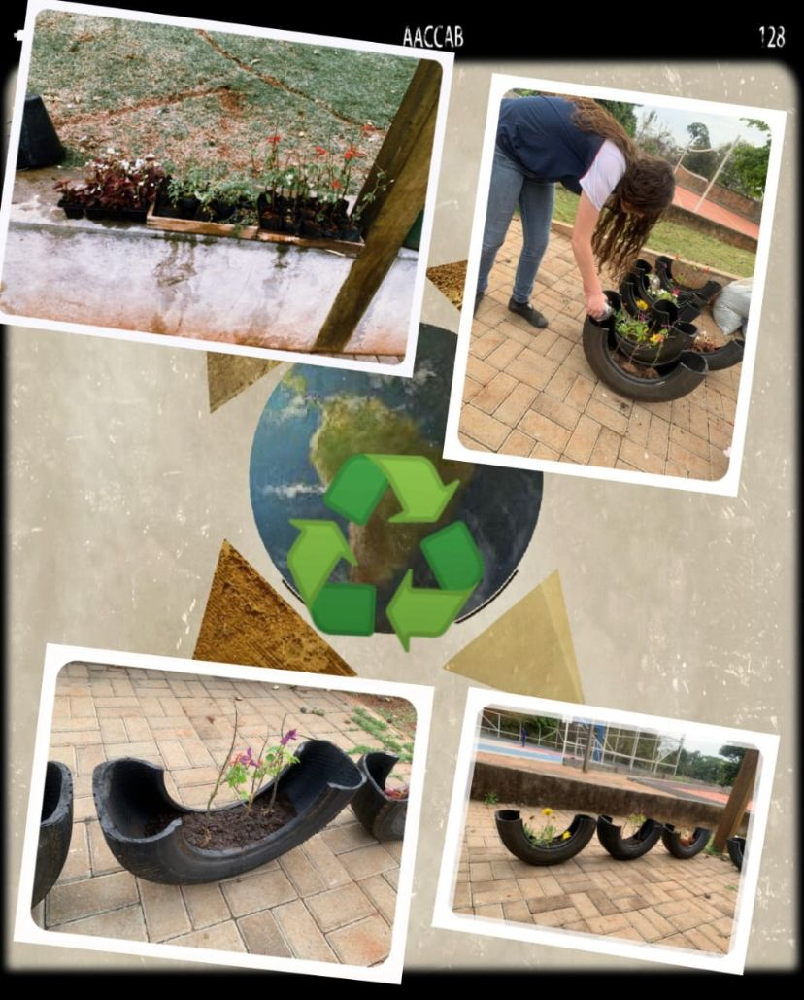
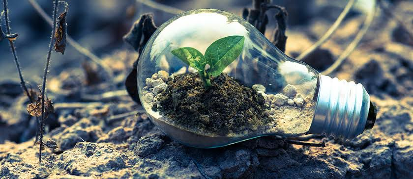
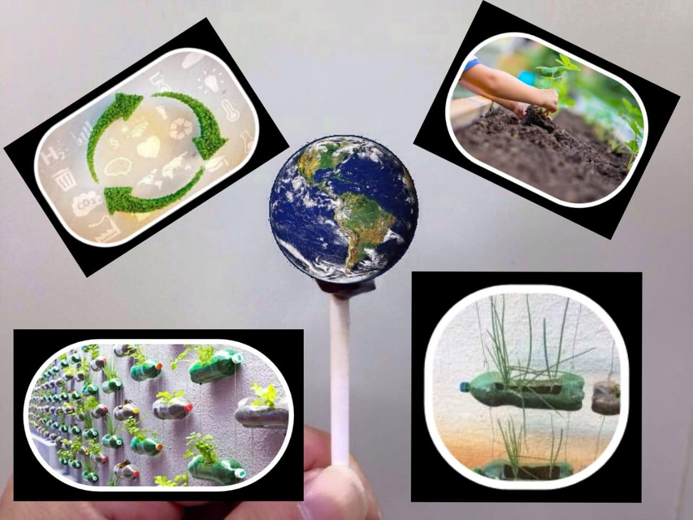
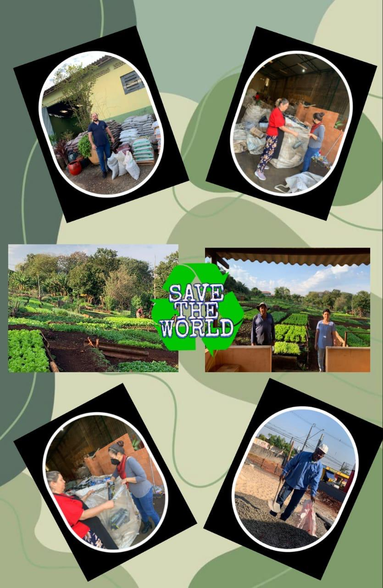
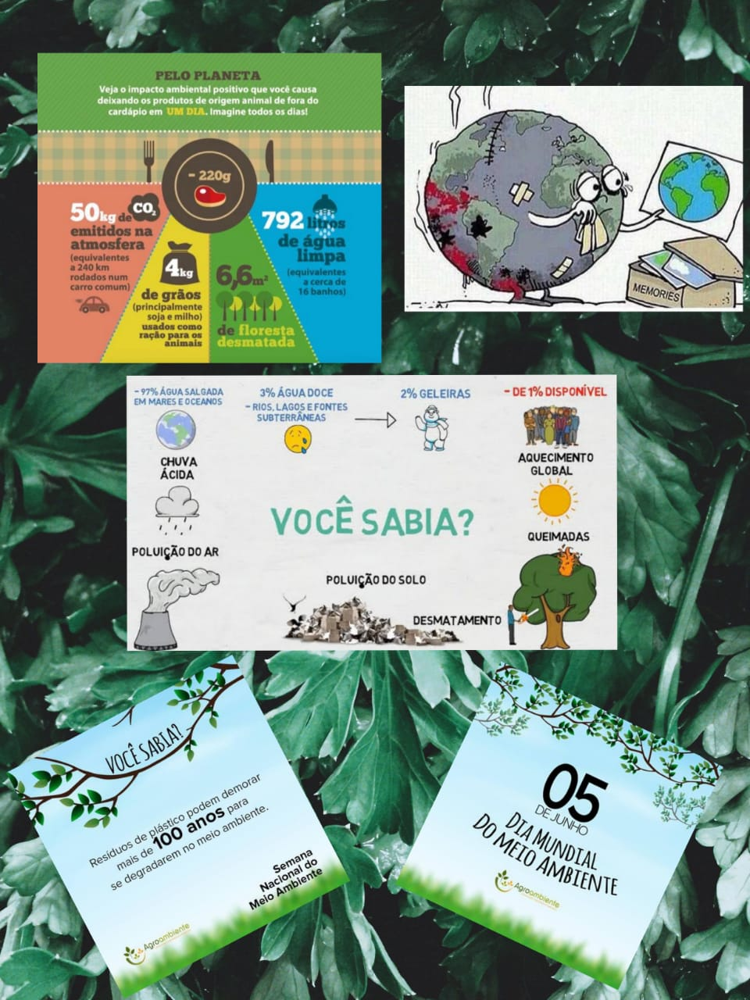

Sustentabilidade Ubedulha
O que seria UBEDULHA em Sustenbilidade?! Aqui iremos postar os trabalhos de fins ambientais afin de promover a sustentabilidade entre Colegas da Escola, bem como os trabalhos sustentáveis realizados pelos professores desta instituição! Espero que gostem!
-

UBEDULHA EM AÇÃO
Website criado para informar a comunidade sobre os acontecimentos, novidades e sobre as ações do Colégio Estadual UBEDULHA Correia de Oliveira - EFMP de Londrina Paraná - Estamos interessados em informar a comunidade londrinense sobre diversos temas, porém o tema deste Mês será: SUSTENTABILIDADE! O CE UBEDULHA está localizado na zona norte de Londrina/PR (região essa também conhecida como “cincão”) conjunto Luís de Sá. Projeto: “UBEDULHA EM AÇÃO” CONCURSO: AGRINHO Componente Curricular: Pensamento Computacional Professora responsável: Karina Cavalcanti Coelho Aluna: Heloysa Pinheiro - 1 ano, turma B - Matutino EM Dúvidas e sugestões: Secretaria da escola: 043 33370325
-

Em AÇÃO
UBEDULHA juntamente com a comunidade local, está colaborando cada vez mais com o Meio Ambiente através de ações de Sustentabilidade, subtraindo em ações Renováveis: reciclando, reutilizando, enfim, reaproveitando diversos recursos Naturais! Um dos exemplos são os Pneus; tais pneus viraram lindas Floreiras, além de estar colaborando com o meio ambiente, é uma forma de transformar algo que seria rejeitado, em algo bonito e bem utilizado!
-

UBEDULHA INFORMA: SUSTENTABILIDADE: o que é sustentabilidade?
Ao pé da letra, o dicionário nos diz que Sustentabilidade é a condição de ser sustentável e, desta forma sustentar alguma coisa, neste caso os recursos naturais, sendo eles todos aqueles elementos da natureza necessários ao homem, sendo renováveis ou não. Para que essas pessoas, empresas e lugares possam viver e se desenvolver em equilíbrio, utilizando recursos finitos (aqueles que tem fim, ou seja, que não são renováveis), surge a necessidade de assegurar um Desenvolvimento Sustentável, ou seja, garantir padrões de produção e de consumo que garantam a disponibilidade destes recursos a todos. A Comissão Mundial do Meio Ambiente e Desenvolvimento da ONU, nos diz que o desenvolvimento sustentável é aquele capaz de suprir as necessidades da geração atual, sem comprometer a capacidade de atender as necessidades das futuras gerações. Afinal de contas, o que é Sustentabilidade e o que você tem a ver com isso? O conceito de Sustentabilidade é muito mais amplo do que a maioria das pessoas imaginam, afinal ele não está relacionado apenas ao meio ambiente, mas também a tudo que está nele e a sua volta, relacionando-se as pessoas, as empresas e negócios que dele dependem. Ao pé da letra, o dicionário nos diz que Sustentabilidade é a condição de ser sustentável e, desta forma sustentar alguma coisa, neste caso os recursos naturais, sendo eles todos aqueles elementos da natureza necessários ao homem, sendo renováveis ou não. Para que essas pessoas, empresas e lugares possam viver e se desenvolver em equilíbrio, utilizando recursos finitos (aqueles que tem fim, ou seja, que não são renováveis), surge a necessidade de assegurar um Desenvolvimento Sustentável, ou seja, garantir padrões de produção e de consumo que garantam a disponibilidade destes recursos a todos. A Comissão Mundial do Meio Ambiente e Desenvolvimento da ONU, nos diz que o desenvolvimento sustentável é aquele capaz de suprir as necessidades da geração atual, sem comprometer a capacidade de atender as necessidades das futuras gerações. E o que você tem a ver com tudo isso? Você tem hábitos sustentáveis? Pensa duas vezes antes de utilizar um copo descartável? Economiza água? E a luz? Separa o seu lixo orgânico do reciclável? Bom, estes e todos os outros hábitos diários do ser humano geram consequências, e sejam eles sustentáveis ou não, afetarão de alguma forma a qualidade do meio ambiente. Práticas sustentáveis no dia a dia, permitirão um desenvolvimento que não esgote os recursos para o futuro. Adotar em seus hábitos diários alguns conceitos como Repensar e Reduzir o seu consumo, Reparar e Reutilizar antes de jogar fora, Reciclar quando não tiver mais utilidade para você, são algumas formas de fazer a diferença.
-

UBEDULHA EM: Como criar sua horta sustentável
É rápido, fácil e você pode fazer usando materiais recicláveis, assim colaborando com o meio ambiente… Vem, corre… aqui a gente te ensina! HORTA VERTICAL COM GARRAFA PET?! ♻️ As atividades desenvolvidas na confecção da horta vertical com garrafas PET mostram-se de baixo custo, viáveis, participativas e contribuem para o aumento de interesse dos estudantes por questões ambientais e nutricionais, o que as tornam um bom instrumento para a construção de consciência ambiental de jovens. UBEDULHA ENSINA como fazer a horta vertical com garrafa PET (garrafa de plástico, exemplo: de Refrigerante). Como fazer horta com garrafa pet? A horta com garrafa PET pode ser montada de diferentes formas, a depender do tamanho e layout do ambiente. Dentre os diversos modelos de horta com garrafa PET, podemos destacar: a horta suspensa com garrafa PET; a horta vertical com garrafa PET e a horta com garrafa PET chão. Horta vertical com garrafa pet A horta vertical com garrafa PET é uma alternativa criativa e barata que facilita o cultivo de hortaliças e temperos, mesmo em ambientes muito pequenos. Para isso, é necessário separar uma parte da parede do cômodo. Contudo, lembre-se que o local escolhido deve receber luz natural e ventilação na maior parte do tempo, pois caso contrário suas plantinhas não vão se desenvolver. Como fazer horta vertical com garrafa pet: passo a passo Separe ao menos 5 garrafas PET para montar sua horta vertical; Pegue uma das garrafas PET e corte com uma tesoura um pedaço na parte superior da garrafa; Depois faça quatros furos principais (dois na parte superior e dois na parte inferior por onde irá passar o fio de metal ou barbante); Seguidamente, faça micro furos na parte inferior da garrafa PET para que água acumulada possa escoar; Passe os fios de barbante ou corda entre os 4 buraquinhos das garrafas e faça nós para que elas fiquem sustentadas. No entanto, caso você opte por arame, é preciso colar duas arruelas embaixo que servem como “calço” para as garrafas não escorregarem. Por fim, com a estrutura já montada, acrescente pedriscos, o substrato e a muda de hortaliça ou tempero desejado. Regue as mudinhas sutilmente evitando que o substrato fique encharcado. O que plantar na horta em garrafa PET? Na horta em garrafa PET você pode plantar alface, rúcula, cebolinha, manjericão, coentro, alecrim, hortelã, espinafre, rabanete, pepino, morango, tomate-cereja, alho, diferentes tipos de pimentas, dentre outras espécies.!
-

UBEDULHA EDUCA
O que é Meio Ambiente: O meio ambiente refere-se ao conjunto de fatores físicos, biológicos e químicos que cerca os seres vivos, influenciando-os e sendo influenciado por eles. Pode ser entendido também como o conjunto de condições que permitem abrigar e reger a vida em todas as suas formas - os ecossistemas que existem na Terra. Sua importância: O meio ambiente nos fornece todos os recursos que precisamos para a nossa sobrevivência, e para que ele continue fazendo isso, nós precisamos cuidar do planeta que vivemos. Dessa forma, o cuidado é extremamente fundamental não apenas para os seres humanos, mas para todos os seres vivos que habitam nele.
-

UBEDULHA ENSINA - CURIOSIDADES:
Você sabe qual é o dia do meio ambiente? Dia 05 de Julho é comemorado o dia mundial do Meio Ambiente, e, no dia 22 de abril é comemorado o dia mundial da nossa girante Terra. este planeta que nos abriga e, infelizmente, não recebe tanto carinho de volta. Você já deve estar cansada de ler notícias sobre acordos mundiais para redução da emissão de CO2, aquecimento global e mudanças climáticas. O mal que os humanos estão fazendo para o planeta, no entanto, vai bem além disso – e uma hora volta para a gente. Trouxemos algumas curiosidades sobre a Terra que vão te fazer repensar pequenas atitudes e, quem sabe, querer mudá-las. 1. 70.8% da superfície da Terra é coberta por água, sendo que 2,2% é água doce. Para consumo, o que temos disponível é apenas 0.3% O Programa das Nações Unidas para o Meio Ambiente liberou um relatório dizendo que cerca de 3,4 milhões de pessoas morrem por ano por causa de água contaminada. Ou seja, a água pura, limpinha e própria para consumo é bem escassa. As campanhas para economizar água têm um grande fundamento e não custa nada você fazer a sua parte. Cuidar para ter no futuro é imprescindível. 2. A produção de lixo no mundo deve subir de 1,3 bilhão de toneladas para 2,2 bilhões de toneladas até 2025 O dado também é do Programa das Nações Unidas para o Meio Ambiente. Coletar e reaproveitar esse lixo, para piorar, é extremamente caro e sabemos que não ocorre em muitos lugares. E onde a gente entra nisso? Não é segredo que o consumo desenfreado é o grande responsável. Repensando os hábitos de consumo a gente economiza nosso dinheiro e ainda diminui a quantidade de lixo descartado. Organizar coleta seletiva onde você mora também pode fazer a diferença. 3. 1,3 bilhão de toneladas de comida são desperdiçadas diariamente, segundo a ONU. Enquanto isso, a UNICEF alerta que quase 1,4 milhão de crianças podem morrer de fome neste ano em apenas 4 países. São eles Iêmen, Nigéria, Somália e Sudão do Sul. Claro que medidas em escalas globais cabem aos líderes mundiais, que precisam administrar melhor a questão. Mas no dia a dia a gente já pode fazer muito para evitar o desperdício. Cozinhar só o que for comer, por exemplo, é básico. E por que você não pega o que sobrar e, ao invés de jogar fora, prepara marmitas para alimentar moradores de rua? 4. Ar poluído mata mais de 7 milhões de pessoas por ano A Organização Mundial da Saúde alerta que a emissão de gases poluentes, como o carbono negro, o ozônio, o metano e o dióxido de carbono não apenas tem grande impacto nas mudanças climáticas, mas está também associada a muitas mortes. Mais uma vez, grandes medidas cabem aos líderes mundiais, mas ao optar por transporte público e preferir fontes de energia limpas (placas solares, por exemplo) já podemos ajudar bastante. 5. Para produzir 1kg de carne de boi são necessários 17.100 litros de água Para produzir a mesma quantidade de carne bovina, no Brasil, também são liberados 335kg de CO2, de acordo com a Sociedade Vegetariana Brasileira. Não estamos falando para ninguém parar de comer carne – ser vegetariano é opção pessoal de cada um. Diante desses dados, no entanto, vale a pena repensar se o ser humano precisa mesmo comer carne todos os dias. Um dia sem consumir já tem um bom impacto. Olha que legal o gráfico que a SVB fez. 6. Veneza, lindíssima cidade italiana, está afundando No século passado o afundamento já foi bem significativo por causa da extração de água subterrânea. Fora isso, o aumento do nível do mar em relação a Veneza é de 4 milímetros por ano, segundo a BBC. Embora a influência das mudanças climáticas nisso tudo seja apenas uma tese, o fato é que, como você já viu na escola, a interferência humana na natureza é sim muito grande e o aumento do nível do mar está rolando, assim como chuvas e secas desreguladas (além de temperaturas subindo). Ou seja, se as coisas continuarem seguindo o rumo em que estão, não só Veneza, mas muitas outras cidades costeiras e ilhas correm o risco de desaparecer dentro de muitos anos. Fora todos esses dados chocantes, caso você ainda não conheça, vale a pena dar uma olhada nos 17 Objetivos de Desenvolvimento Sustentável da ONU. Para explicar cada um deles, são apontadas informações globais que realmente preocupam. Se a humanidade não começar a mudar agora, pode ser que algum dia ninguém esteja mais aqui para comemorar o Dia da Terra. Já passou da hora de começarmos a mudar. Como costumam dizer, não dá para abraçar o mundo – mas se todo mundo abraçar pequenas causas ao seu redor, juntos conseguimos envolver o planeta todo. Pense como você pode fazer a diferença à sua volta e incentive as pessoas a fazerem o mesmo. A Terra agradece e as futuras gerações também. Afinal, é a casa de todos nós.
-
UBEDULHA EDUCA
O que é Meio Ambiente: O meio ambiente refere-se ao conjunto de fatores físicos, biológicos e químicos que cerca os seres vivos, influenciando-os e sendo influenciado por eles. Pode ser entendido também como o conjunto de condições que permitem abrigar e reger a vida em todas as suas formas - os ecossistemas que existem na Terra. Sua importância: O meio ambiente nos fornece todos os recursos que precisamos para a nossa sobrevivência, e para que ele continue fazendo isso, nós precisamos cuidar do planeta que vivemos. Dessa forma, o cuidado é extremamente fundamental não apenas para os seres humanos, mas para todos os seres vivos que habitam nele.
-
Horta comunitária realizada pelos alunos e professores do Colégio Estadual UBEDULHA - EFMP